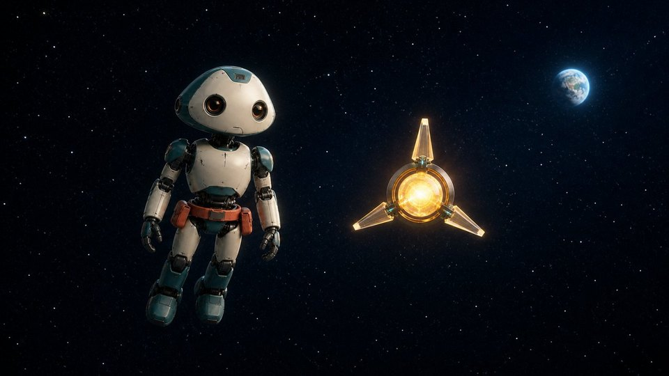

S001 星の海を並んで
00:00–00:03
- Story purpose
- 二人が友達として一緒に旅していることを示す。
- Visible scene
- 深い紺色の宇宙。ミオが画面左、ルクスが画面右で、同じ高さに並び、遠くの小さな青い地球へ静かに進んでいる。
- Characters
- ミオ、ルクス
- Action
- 二人が一定の間隔を保ち、無重力の中を穏やかに前進する。
- Emotion
- 安心、友情、静かな好奇心
- Camera
- 二人を正面斜めから捉える映画的ワイド。非常にゆっくり後退して並走する。
- Lighting
- 地球の青い反射光とルクスの柔らかな金色光。黒を潰さず輪郭を見せる。
- Dialogue
- —
- Narration
- —
- Sound
- 静かな映画的パッド、ミオの微かな機械音、ルクスの金色の共鳴音。体感上の無音を作らない。
- Continuity
- ミオ左、ルクス右、青い地球は二人の前方。外見、大きさ、間隔を固定。
Nine-frame plan
- 0.000s宇宙と二人
- 0.333s並んで進む
- 0.667sミオが微小に安定
- 1.000sルクスが弱く光る
- 1.333s地球は遠い
- 1.667s星がゆっくり流れる
- 2.000s間隔を維持
- 2.333s静かな並走
- 2.667s次へ続く